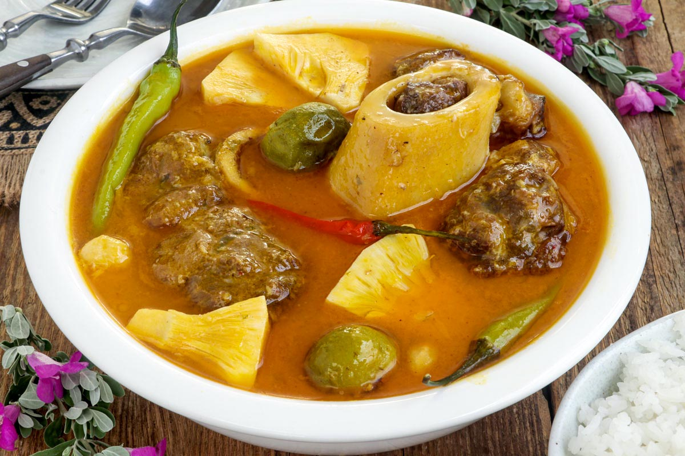

Kansi

Kansi an Ilonggo delicacy
What is Kansi?
Cansi or Kansi is a hearty beef soup popularly known for its tangy and fresh flavor that
is known to have originated from Bacolod and is a staple dish in the Ilocos region. This
soup is normally made from broth of beef shanks with green jackfruit, chili peppers, and
batuan (batwan).
Locals enjoy eating Kansi piping hot served with steamed rice and patis (fish sauce)
with calamansi as a dipping sauce.
Allow leftovers to cool completely before storing them in the refrigerator. Do not leave
it at room temperature for longer than four hours, especially on a hot day. Transfer
them to a container with a tight-fitting lid. It should last for up to 3 days.
Ingredients
- 2-3 pounds beef shanks
- 6-8 cups water
- 1 tbsp rock salt
- 1 medium onion sliced
- 1 stalk lemongrass tied into a knot
- salt to taste
- 5-6 pcs batwan
- 1 tbsp annatto seeds
- 3 cups unripe jackfruit sliced
- 3 pcs green chilis
- 2 pcs red chilis
Preparation Procedures
-
2-3 pounds beef shanks,6-8 cups water,1 tbsp rock salt.
Place beef shanks in a pot and add water and salt. Cover and cook over high heat and
bring to a rolling boil.
- Drain the water from the pot. Rinse the meat and the pot.
-
Return the meat to the pot and add enough water to cover the meat. Cover and bring
to a boil over low heat.
-
1 medium onion,1 stalk lemongrass,salt
Remove the cover and add onion, lemongrass, and salt to taste. Cover and simmer
until beef is fork-tender.
-
5-6 pcs batwan
Add the batwan, cover the pot again and cook until
soft.
-
1 tbsp annatto seeds
Place annatto seeds in a small fine-mesh sieve/ strainer. Submerge it into the pot
and press to release the color.
-
3 cups unripe jackfruit, 3 pcs green chilis, 2 pcs red chilis
Add unripe langka and cook until tender. Add chilis and simmer for about 3 mins.
- Remove from heat and serve while piping hot.